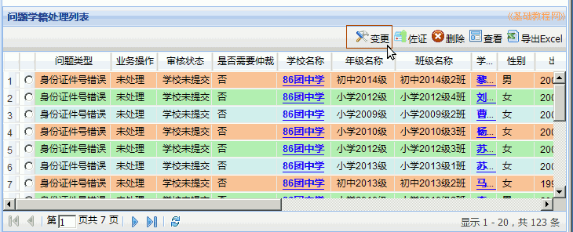
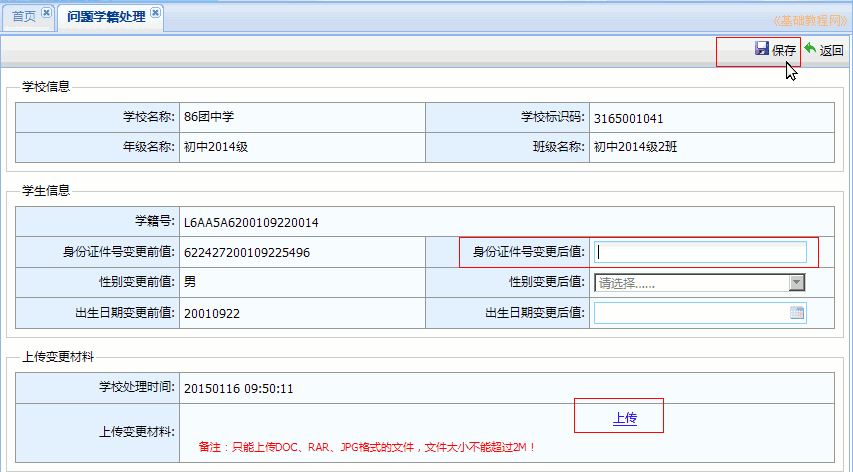

全国中小学生学籍管理系统操作指南
作者：TeliuTe 来源：基础教程网
三、问题学籍处理 返回目录 下一课问题学籍一般是身份证号错误造成的；
1）依次点“学籍管理－省内问题学籍管理”进入，以前的到“学籍注册”里找，外省的到跨省里找，
如果是身份证号错误，选中后点“变更”，出现关键数据变更对话框，

输入正确的身份证号，上传证明材料（户口本照片），然后点右上角“保存”。变更通过后，另一方自动处理，删除也是这样；

２）如果身份证号重复，或其他问题学籍，可以点左侧栏的“省内问题学籍处理”，查看问题类型；
３）选中后点“查看”，如果是新注册时本校重复，删除后重新上传两个学生的学籍模板，重新注册；

４）如果是跟其他学校重复，需要联系相应学校，确定保留哪一方之后，再进行处理；

５）如果本校是正确的，可点击“佐证”，证明材料为第二代身份证或二代身份证办理回执原件照片，
等待上一级主管审核处理，G开头的学籍是正式学籍最好不要删除，删除L开头的临时学籍号，然后办理转学，不要随意删除已注册的学生；

6）跨省问题学籍处理步骤类似，解决步骤参考：公安部校验后出现的问题学籍处理操作说明
本节学习了学籍注册的基础知识，如果你成功地完成了练习，请继续学习下一课内容；
本教程由TeliuTe制作|著作权所有
基础教程网：http://teliute.org/
美丽的校园……
转载和引用本站内容，请保留作者和本站链接。